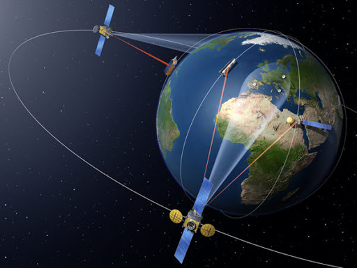
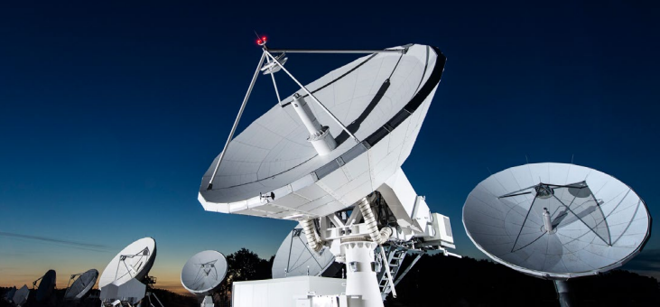

Спутниковая связь
Определение спутниковой связи достаточно убедительно звучит в следующей формулировке: спутниковую связь необходимо приравнять к разновидности космической радиосвязи, которая основана на использовании специальных ретрансляторов – искусственных спутников связи.Спутниковая связь – это один из видов космической радиосвязи, основанный на использовании в качестве ретрансляторов искусственных спутников Земли, как правило, специализированных спутников связи. Радиосигнал ретранслируется небольшими космическими аппаратами, которые движутся вокруг Земли по определенной траектории.

Аппарат, выведенный на орбиту в интересах обеспечения ретрансляции и обработки радиосигнала, получил название искусственного спутника связи (сокращенно ИСС). На борту искусственного спутника связи монтируется сложная ретрансляционная аппаратура: блоки приема/передачи сигнала, а также узконаправленные антенны, работающие на определенных частотах. Работа искусственного спутника связи состоит в приеме сигнала, его усилении, частотной обработки и ретрансляции в направлении земных станций, пребывающих в зоне видимости аппарата. Спутник-ретранслятор – автономное устройство, способное обеспечивать свое местопребывание в заданной точке пространства и потребляющее электроэнергию от бортовых источников питания. Система стабилизации обеспечивает заданную ориентацию антенны спутниковой связи. Передачу на Землю данных о положении космического аппарата, прием управляющих команд обеспечивает телеметрическое оборудование.
×

Космическая связь
Ретрансляция полученного радиосигнала может реализовываться с запоминанием и без запоминания, что обусловлено непостоянным пребыванием спутника в зоне видимости земных станций.
На сегодняшний день системы спутниковой связи являются неотъемлемой частью телекоммуникационных магистралей мира, связавших континенты и страны.
Принцип спутниковой связи.
Принцип спутниковой космической связи предполагает передачу/прием радиосигнала с использованием базовых наземных или подвижных станций через спутниковый ретранслятор. Данная специфика обеспечения прохождения радиоволн обусловлена кривизной земной поверхности, препятствующей прохождению радиосигнала. Иными словами, в зоне прямой видимости радиосигнал с одной станции на другую транслируется без задержек.

Однако, если стоит задача получить сигнал за многие тысячи километров от передающей станции, то требуется ретранслятор, направляющий сигнал под соответствующим углом на приемную станцию.
×

Спутниковые антены
По своей сути, спутниковая связь через устройство-ретранслятор является типовой аналогией радиорелейной связи, только в этом случае, ретранслятор располагается на значительном расстоянии (высоте) от земной поверхности, исчисляемой тысячами километров. Если для организации радиосвязи на большие расстояния в разные места земного шара требовалось множество наземных ретрансляторов, то с появлением космических спутников их количество сократилось в разы. Теперь для трансляции радиосигнала с одной материковой части на другую требуется всего один спутник.
Спутниковая связь, в целом, обеспечивается целым комплексом взаимосвязанных элементов системы связи: спутниками-ретрансляторами; стационарными земными станциями спутниковой связи на земной поверхности; центром управления спутниковой связи (ЦУСС) и др. элементами системы.